The Symbaroum rule set allows you to add homebrew choices to most of its selections: powers, weapons, races, and so on. The entry dialog for each type of choice includes fields for all the information particular to that type. For most choices, the values to enter into the dialog can be determined by comparing them to similar choices from the core rule book.
The input fields used to enter homebrew choices are similar to those used by the Quilvyn editor—text fields, selection menus, checkboxes, etc. One difference between the two is that you can enter multiple values into most text boxes in the homebrew choices editor. For example, when entering a homebrew occupation, you may want to enter multiple values in the Race text box. To do this, separate the individual values by commas: Ambrian,Barbarian. If you ever need to enter a single value that contains a comma into a text box, enclose the value in quotes: "May create and mend magic weapons, armor, and shields".
Although the widest text boxes that Quilvyn uses show around 40 characters, you can enter longer text values. Only 40 characters will show at once, but you can use your arrow keys to move the cursor within the full text. Several examples below show only the beginning portion of longer values entered into text boxes.
Abilities and Traits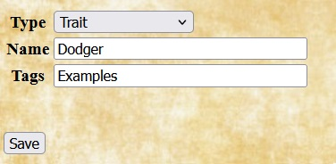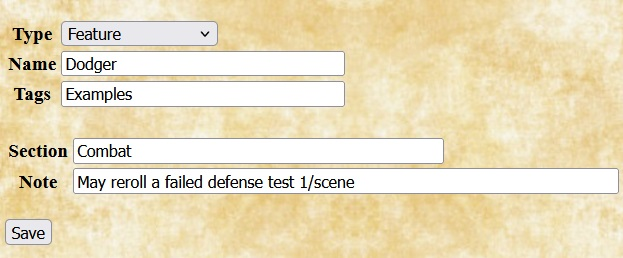 |
Entering a homebrew ability or trait requires only specifying the name; the effects are specified using a corresponding feature. The example shows the entry for a Lucky trait, as well as its corresponding feature. |
Armors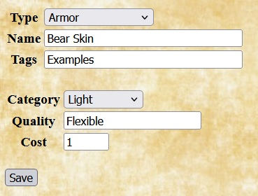 |
When entering a homebrew armor type, Quilvyn provides fields that allow you to enter the armor category (Unarmored, Light, Medium, or Heavy), and qualities that the armor possesses, and the cost in thalers. The example shows the entry for a bear skin, as described in the sample adventure in the core rules. |
Features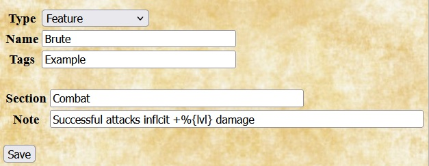 |
In Quilvyn, features describe the effects of abilities and traits. When When adding a homebrew feature, enter the section of the character sheet (one of attribute, combat, description, feature, or magic) where the note for the feature should appear, then enter the note text. You can enter multiple sections and notes, but the number of sections entered must equal the number of notes. Feature notes can both reference and modify character stats; see the discussion of using character stats for how to do this. The example shows the entry of a feature named Brute, corresponding to an ability of the same name, with a note that appears in the combat section of the character sheet. It increases damage by 1, 2, or 3 when taken at the Novice, Adept, or Master level. |
Occupations | |
| 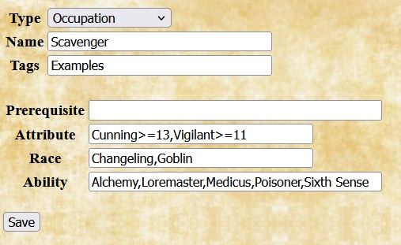 |
For homebrew occupations, Quilvyn provides fields that allow you to enter the attributes, races, and/or abilities related to the occupation. Quilvyn uses these values when randomly determining information for a character; it will choose the items listed as important to the occupation more often than other alternatives. If an occupation includes a minimum value for an attribute, you can specify this by adding ">=" and the value after the attribute name; for example, the attribute field for berserkers reads "Strong>=15,Quick>=11". The example shows the entry for a Scavenger concept, which falls under the Rogue archetype. |
Mystical Traditions | |
|
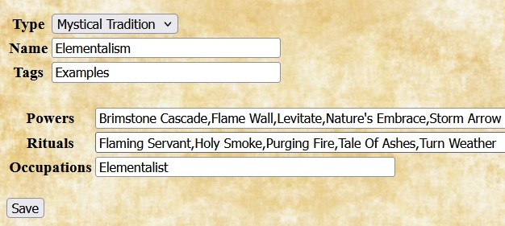 |
When adding a homebrew mystical tradition, Quilvyn provides fields that allow you enter the lists of powers, rituals, and occupations associated with the tradition. The example shows the entry for a Mysical Tradition named Elementalism, which is connected to the homebrew occupation Elementalist. |
Powers and Rituals | |
|
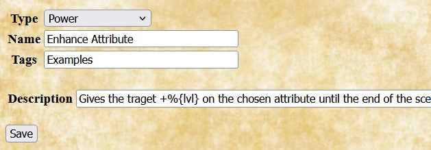 |
When adding a homebrew power or ritual, Quilvyn displays a field that allows you to enter the description of its effects. These descriptions can embed references to character stats; see the discussion of using character stats for how to include these. The example shows the entry for a power named Enhance Attribute, which increases the target's score in a chosen attribute by 1, 2, or 3 when taken at the Novice, Adept, or Master level. |
Races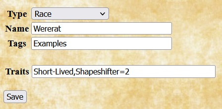 |
For homebrew races, Quilvyn provides a field for listing the racial traits associated with the race. For traits that have multiple levels, Quilvyn assumes the Novice level of the trait for the race; to give the race a trait at the Adept or Master level, add "=2" or "=3" to the trait name. The example shows the entry for a wererat race that has the Short-Lived trait and the Shapeshifter trait at the Adept level. |
Shields | |
| 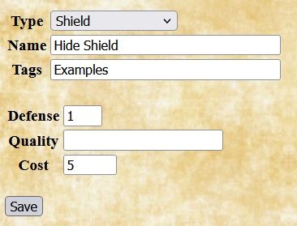 |
When adding a homebrew shield, Quilvyn provides fields for entering the amount that it adds to the characters Defense (typically 1), any qualities it possesses, and its cost in thalers. Quilvyn automatically adds 1 to the defense value of shields that have the Balanced quality, so you should enter the unmodified defense value for shields with this quality. The example shows the entry for a hide shield. |
Weapons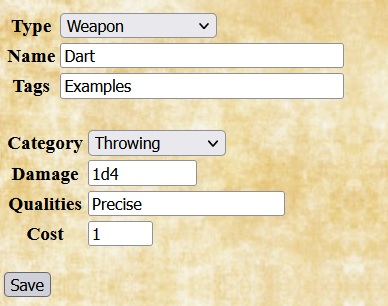 |
When adding a homebrew weapon, Quilvyn displays fields that allow you to enter the the weapon's category (Heavy, Long, Projectile, Single-Handed, Short, Throwing, or Unarmed), the damage it inflicts, any Qualities it possesses, and its cost in thalers. If you leave the Damage box empty, the damage inflicted by the weapon will be inferred from its category—1d10 for a heavy weapon, 1d8 for a long weapon, etc. (Projectile weapons default to 1d8.) Quilvyn automatically modifies the damage value for Blunt (-1 damage die step) and Precise (+1 damage) weapons, so you should enter the unmodified damage for weapons with either of these qualities. Weapons with a category of Short or Long are assumed to have the corresponding quality. The example shows the entry for a dart, a throwing weapon that inflicts 1d4 damage. |
There are three places that you might want to use references to character stats when adding homebrew choices: prerequisites for homebrew edges, hindrances, and races; in feature notes that modify character stats; and embedded in feature notes and spell descriptions and modifiers. Stat references appear somewhat differently in each of these contexts.
The examples below develop a homebrew edge named Alert Dodger, which allows a character to add half of their smarts to their parry instead of half of their fighting skill. This will be a combat edge, so the initial entry for the edge looks like this:
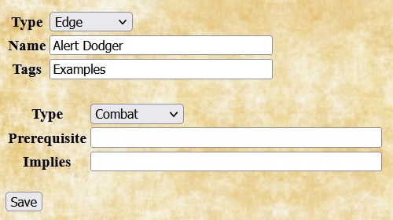In the core rulebook, many edges have prerequisites—stat values that the character must have to take the edge. Quilvyn allows you to specify similar prerequisites when entering a homebrew edge, hindrance, or race.
Since the effects of the Alert Dodger edge come from battle experience, it makes sense to require a minimum experience to take it. We can give the edge a minimum requirement of seasoned rank (i.e., at least 4 advances) by adding text to the edge's Prerequisite field:
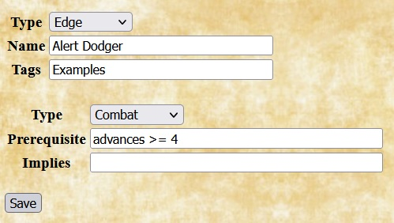Quilvyn will generate tests for this requirement and will show a validation error if a character with fewer then 4 advances is given this edge. You can also specify that the character must have a specific feature as part of your prerequisites. For the Alert Dodger edge, it might be reasonable to require that the character also have the Alertness feature:
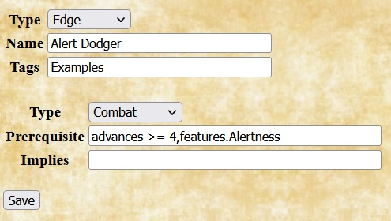Finally, although a high smarts value might not be required to take this edge, it will make little sense to do so unless the character's smarts value is greater than their fighting skill value. This can be specified by adding text to the Implies field:
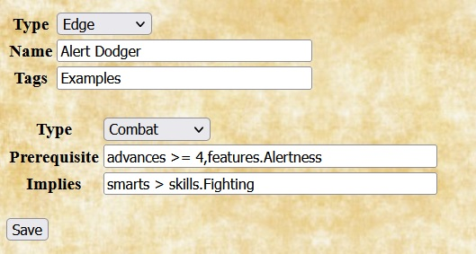Within prerequisites, Quilvyn recognizes the common comparison operators (<, <=, >, >=, ==, !=), and you can use the OR operator (||) to require that at least one of a set of prerequisites is satisfied:
smarts >= 6 || spirit >= 6
When making a comparison to a text value rather than a number, surround the value with single or double quotes. Quilvyn also supports the matching operators =~ (matches) and !~ (does not match) with strings. The first of these two prerequisites requires that the character's origin be Arden Wood, while the second allows any origin with Wood in the name:
origin == 'Arden Wood'
origin =~ 'Wood'
(You can think of the =~ and !~ operators as "contains" and "does not contain", but they actually perform a pattern match, treating their second operand as a regular expression. This means that certain characters, such as * and ?, have special meanings if they appear in the second operand. The Mozilla project provides a web page with a detailed description of regular expressions.)
With the Alert Dodger edge definition complete, the next step is to create the corresponding feature, also named Alert Dodger. This will add the description of the edge to the character sheet and allow Quilvyn to create rules to implement its effects. Since the edge affects a character's parry, its note will fit best in the combat section of the character sheet.
To illustrate how Quilvyn processes feature notes, we'll initially define the Alert Dodger edge to add a fixed +1 to the character's parry, switching later to using the character's smarts value instead.
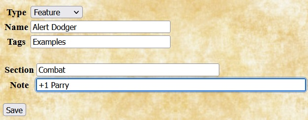Given this definition, Quilvyn will automatically generate a rule that adds one to the character's parry value, and the note will appear in italics on the character sheet. For readability, character stats in feature notes must appear as shown above, with an initial capital letter. If the stat consists of multiple words, each word must be capitalized, and the words must be separated by spaces. For example, a feature that increases a character's armorToughness by one would have a note that reads:
+1 Armor Toughness
Single features can modify multiple stats; in these cases, the note should list the individual modifications separated by slashes. This was shown above in the feature definition example, where the note for the Glib feature reads:
+1 Performance/+1 Persuasion
As shown here, notes in the skill section can affect skill modifiers by referencing the skill name directly; the skillModifier. prefix is not necessary.
Some edges, racial abilities, and powers have effects that vary based on character stats. For example: the Block edge increases the character's parry by one, or by two if the character also has the Improved Block edge; the Aquatic racial ability gives the character a swim speed equal to their pace; and the Light/Darkness power has a modifier that allows the caster to move it each round a number of squares equal to their arcane skill.
You can embed references to character stats in the text of feature notes and power descriptions and modifiers by enclosing them within the characters %{}. Using this ability, the modifier for the Light/Darkness power reads:
+1 PP Attaches to object or moves effect %{arcaneSkill}"/rd
When Quilvyn displays this note on the character sheet, it first replaces the reference to the character's arcaneSkill stat with its value, so the note might appear on the sheet as
+1 PP Attaches to object or moves effect 8"/rd
We can use this ability to replace the fixed +1 entered earlier for the effects of the Alert Dodger feature with an amount equal to the character's smarts value:
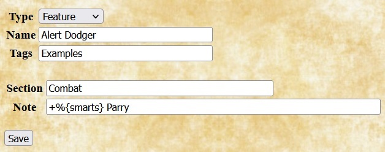Given this note, Quilvyn will automatically generate a rule to add the character's smarts value to their parry value and will display the note in italics.
Recall, however, that we want to add half of the character's smarts value to their parry value, replacing the half of their fighting skill value that is already added. Beyond simple stat references, Quilvyn supports performing calculations within embedded references. Using this feature, we can update the definition of the Alert Dodger feature to its final form:
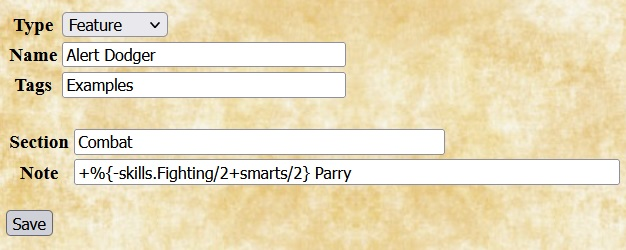As this note shows, individual references can make use of use multiple stats.
Within embedded references, Quilvyn supports the common comparison operators (<, <=, >, >=, ==, !=), the common arithmetic operators (+, -, *, /, unary -), AND (&&), OR (||), matching (=~, !~), and integer division (//). It also supports the ternary if-then-else operator (?:) and the operators <? and >?, which return the smaller and larger of their two operands, respectively. Using these operators, we can define the note for the Tactician feature as follows:
R%{commandRange}" May distribute %{combatNotes.masterTactician?2:1} Action Cards to commanded each rd
| Traits | Identity | Combat | Arcana | Edges and features |
|---|---|---|---|---|
|
|
|
|
|